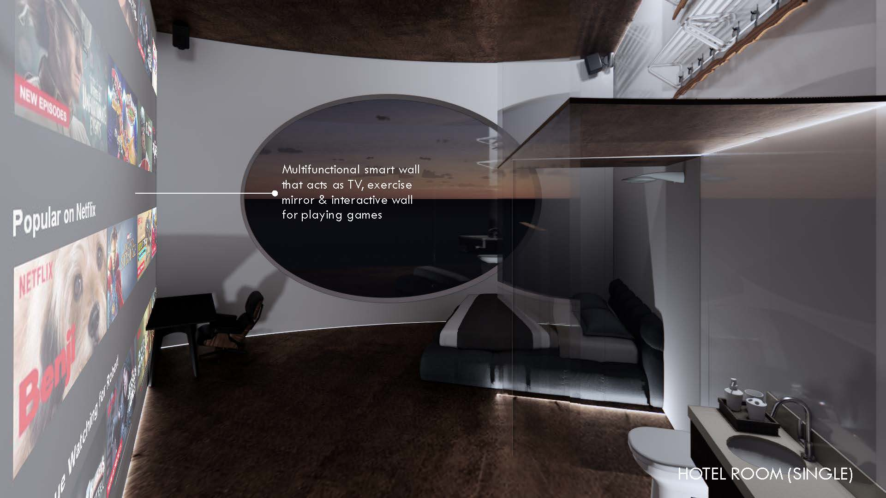
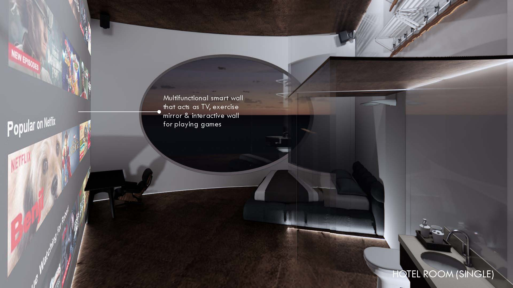

Project
The Future of Vacation
Conceptualising the first unmanned AI hotel experience üè®
Categories
Architecture | Coding

Organisation
SUTD Term 8 Artificial & Architectural Intelligences in Design
Role
Part of a pair: developed website, rendered images, and assisted in designing & 3D modelling
Duration
May - Aug 2022
Background
AI seamlessly integrates into our daily lives, often slipping under the radar. Platforms like Netflix, Instagram, and Spotify skillfully tailor recommendations based on user reactions, interests, choices, and behavior.
Take Siri, for instance, a friendly daily companion facilitating tasks like messaging, navigation, and information retrieval. Then there's Derive, an urban exploration app disrupting routines by guiding users through random and unplanned urban experiences. Its screen prompts offer unexpected encounters, making each exploration uniquely unpredictable.
Real-life experiments reveal individuals relinquishing control to AI-generated itineraries for a few hours. Yet, shortcomings emerge as AI lacks comprehensive consideration, sometimes leading to unintended consequences. Surprisingly, these experiments shed light on the extent to which AI already influences our day-to-day lives.
In the current landscape, algorithms serve not only as daily companions but also as tools for exploration and unexpected discoveries. Building on these experiments, we ponder a future where humans willingly live under AI's governance. Picture a scenario where AI, armed with an understanding of our preferences, behavior, surroundings, and health, dictates every decision.
Visualize a human mannequin symbolizing this concept, emphasizing the deactivation of the frontal lobe—the decision-making hub—in the brain. The transparent appearance signifies freedom from decision-making, akin to following AI's lead.
This speculation leads us to envision the future of vacations through architecture. Enter Casa Sabio, the inaugural unmanned AI hotel embodying the essence of staycations guided by AI decisions. Here, novelty and the unexpected become the norm, offering a glimpse into a future where human experiences are curated by artificial intelligence.
Presentation

 
